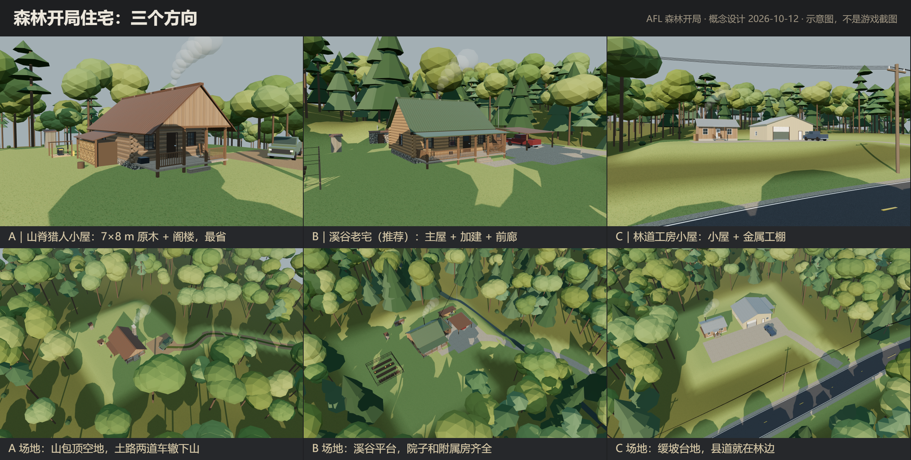
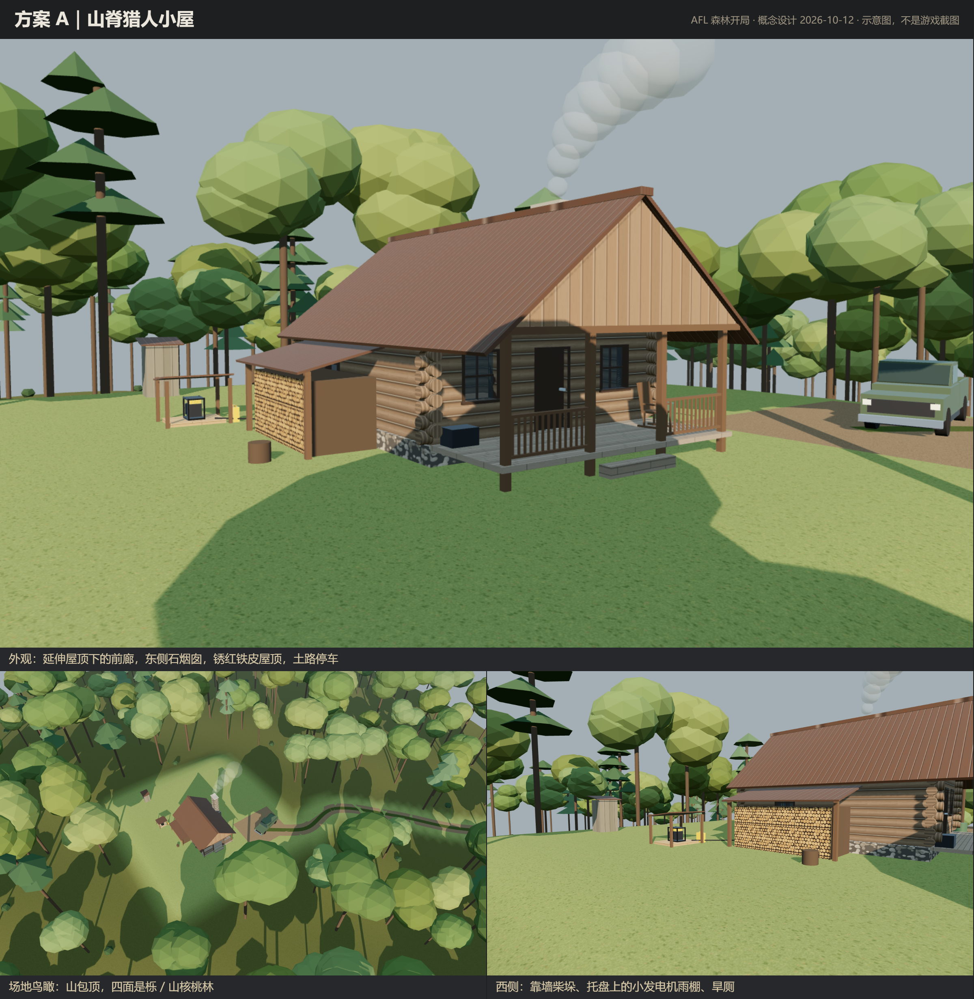
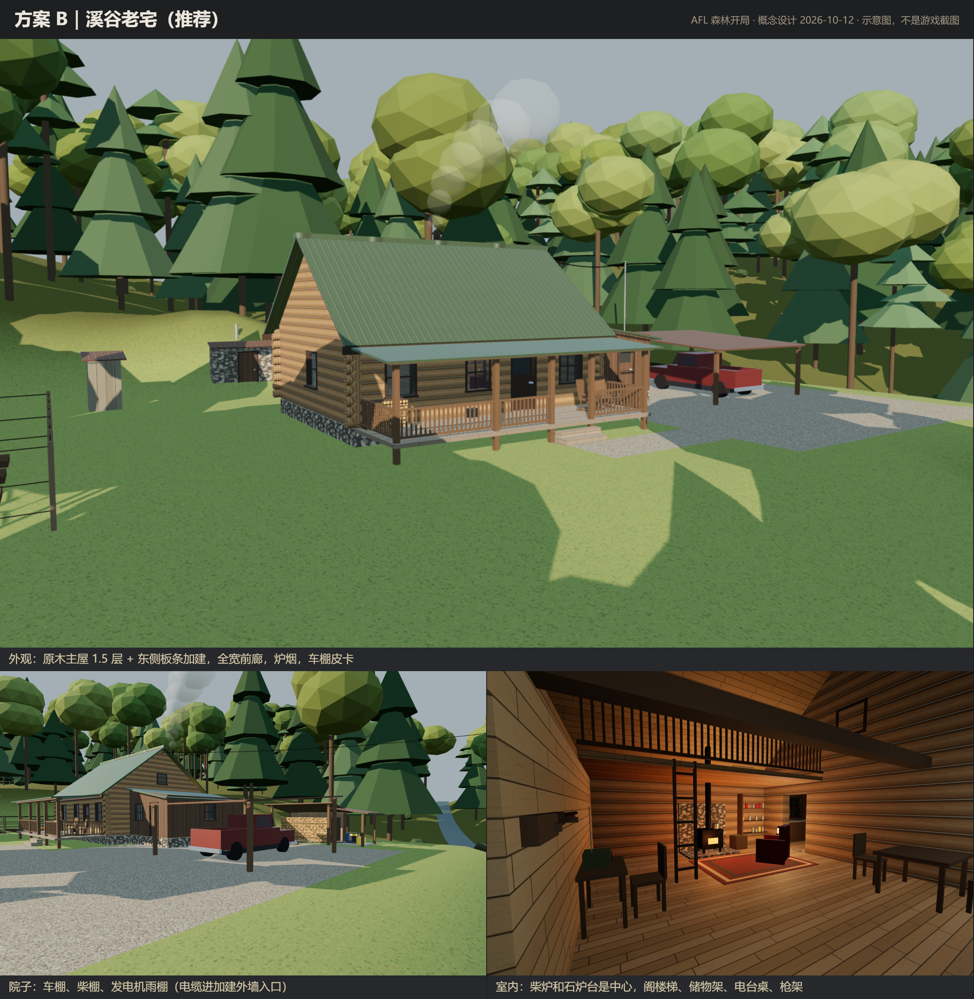
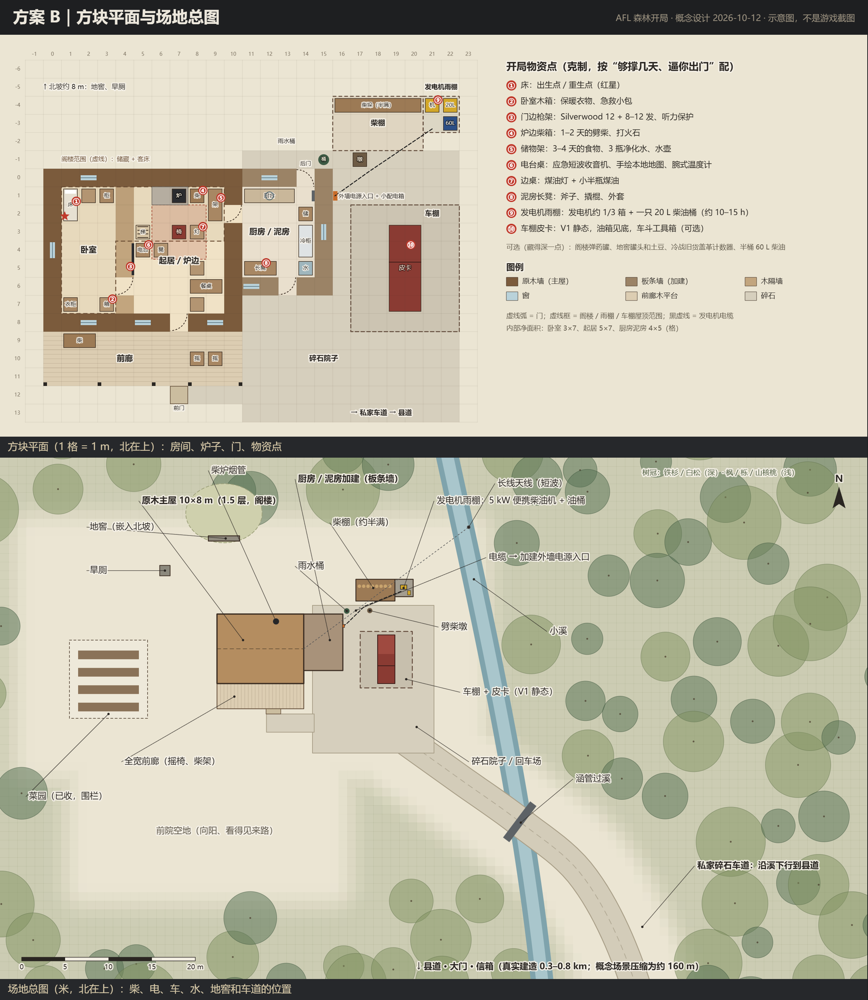
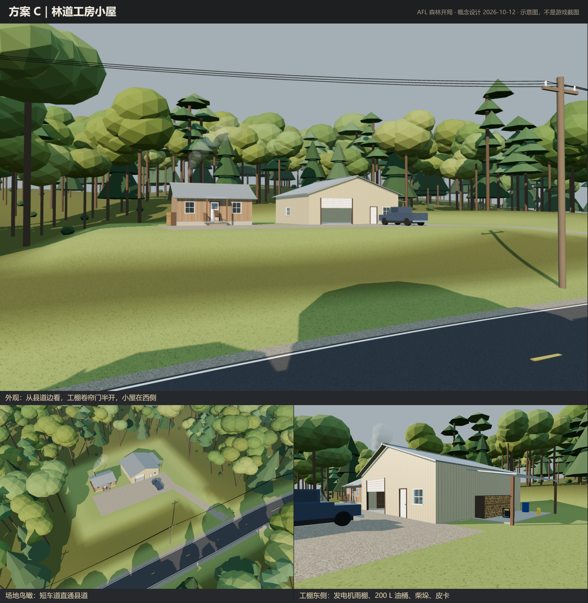
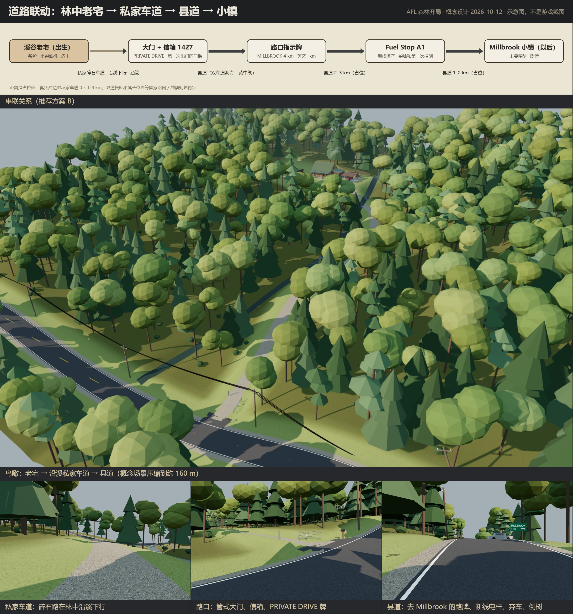

默认森林开局，核战后 1–3 个月。主角是战前就住在山里的隐居者，没有电网：柴炉取暖，要用电时开便携柴油发电机。住宅和道路一起设计：林中老宅 → 私家车道 → 县道 → 小镇方向，开局的第一个目标就是出门。
2026-10-12 用户选定 B 作为森林开局 V1 的默认实现，A、C 保留作以后随机开局变体的候选；实现拆分见 docs/worldgen/forest_start_home_b_v1_plan.md。这一轮只做设计：没有改代码，没有建世界生成结构，没有做家具包，没有加木材衍生方块。图是网页里的低多边形示意（three.js 场景 + 2D 平面），不是游戏截图。文字版（平面坐标、开局物资、派生需求 V1 必须 / V1 占位 / V2）在 docs/worldgen/forest_start_home_concept_v1.md。
A 最省，B 生活逻辑最完整，C 车和路的联动最好。

7 × 8 m 原木一层 + 阁楼，山包顶，土路下山。经典、最省，但太挤，讲不出"住了很多年"。

一个人住了很多年的家：原木主屋 + 自己加盖的厨房泥房 + 全宽前廊。

方块坐标 x 向东、z 向南，北在上。主屋 x 0–10 × z 0–8，加建 x 10–15 × z 0–6，前廊 z 9–11；柴炉 (7, 1)，出生床 (1, 1–2)。

8 × 6 m 板条小屋 + 12 × 11 m 金属工棚，短车道直通县道。偏半工业，隐居感弱。

老宅 → 沿溪碎石私家车道 → 管式大门和信箱 → 县道 → Millbrook 方向。概念场景把距离压缩到约 160 m，路网和镇子位置都是占位。

重新出图：node source/serve.cjs，打开 http://127.0.0.1:8765/forest_home_concept.html，在控制台跑 await renderAll() 再 await renderSheets()，图纸会覆盖 sheets/ 里的同名文件。